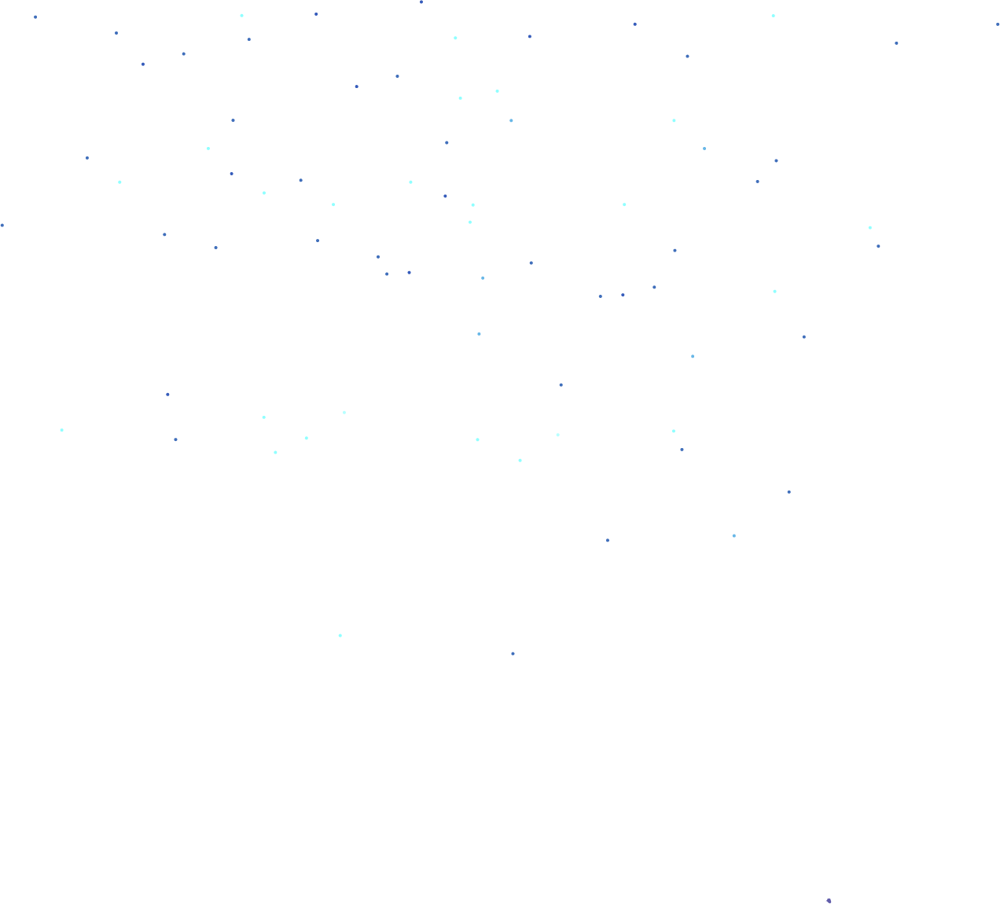
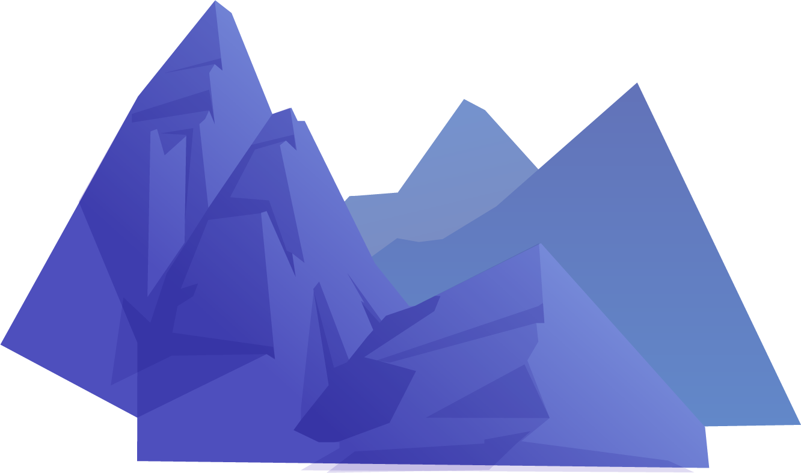
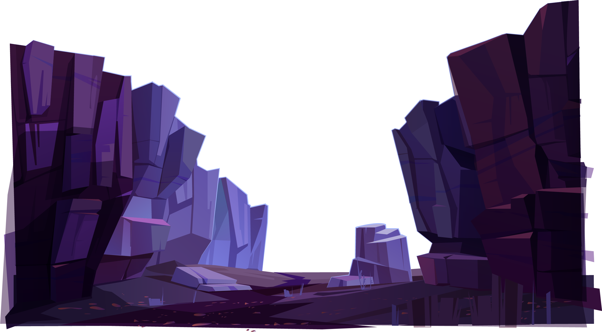

UI/UX Designer or Web Developer / Graphic Designer / Motion Graphics Artist / Game Developer at your organization. With a strong blend of creative and technical expertise, I bring experience across design, user experience, animation, and web development.
I have over 3 years of experience as a Graphic Designer and Motion Graphics Artist, working with tools like Adobe After Effects, Premiere Pro, Photoshop, Illustrator, and DaVinci Resolve. I have created engaging visual content, animations, and video edits that enhance brand presence and user engagement.
In addition, I have worked as a 3D Designer, VFX/FX Artist, and Game Developer using Blender, Maya, Cinema 4D, Unreal Engine, and Unity (AR/VR with C#), delivering high-quality creative outputs.
On the technical side, I have experience as a Full Stack MERN Developer, building responsive and dynamic web applications using React.js, Node.js, Express.js, and MongoDB. I am also skilled in HTML, CSS, JavaScript, MySQL, Python, Git, and GitHub, which allows me to bridge the gap between design and development.